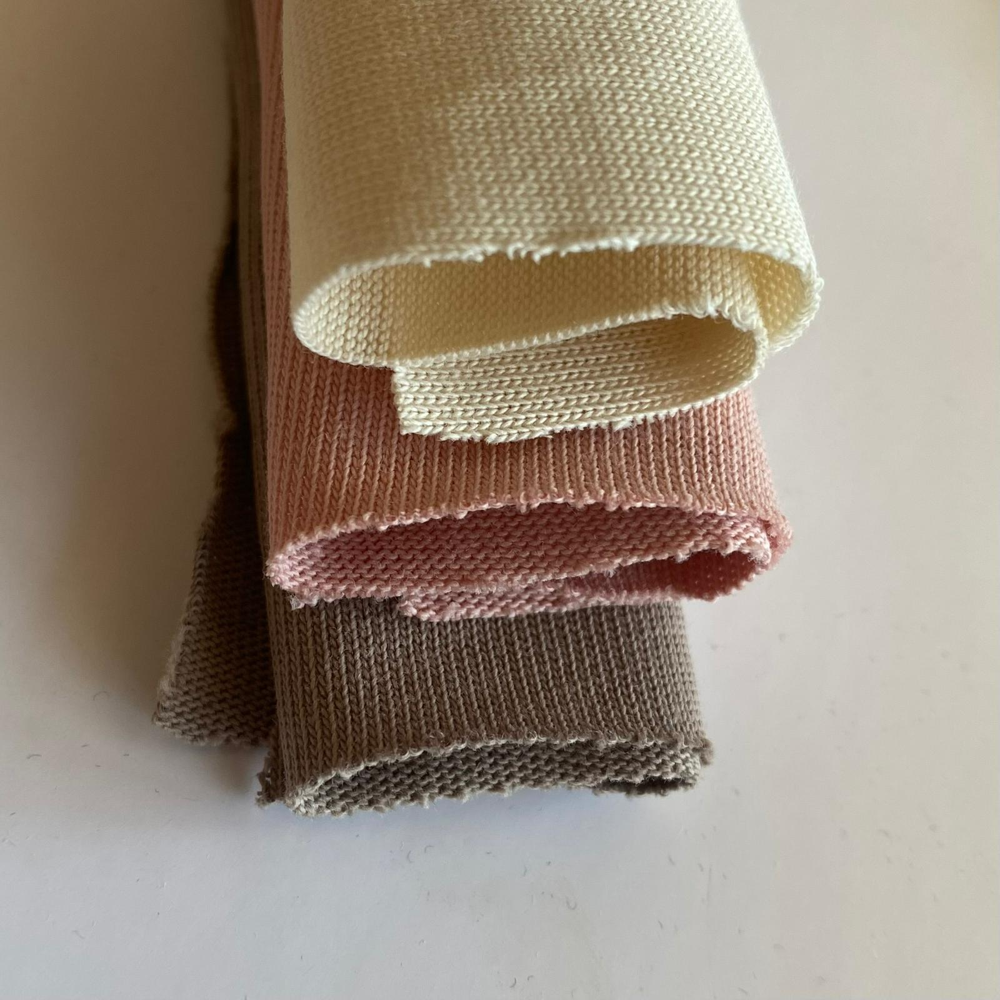
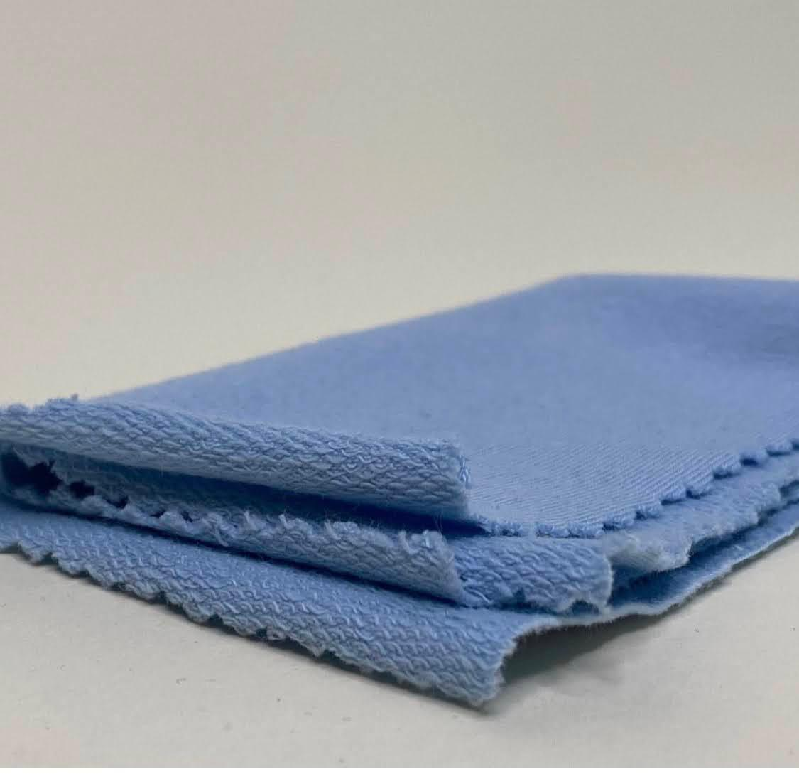
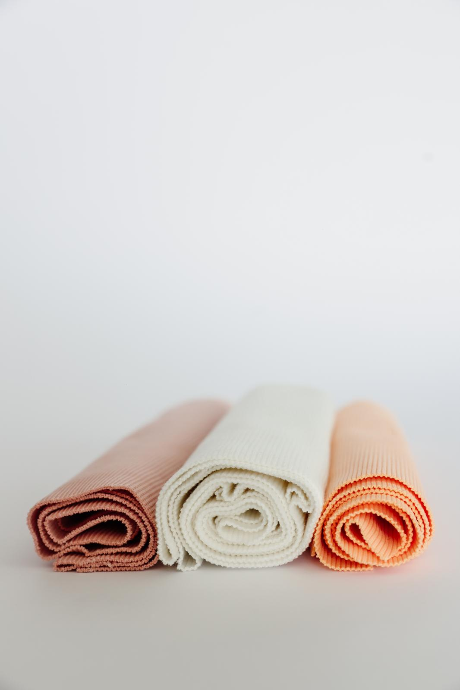

Deo naše kolekcije da Vam zagolicamo maštu
Premijum materijali za sve tipove modnih kreacija.
Pogledajte najčešća pitanja u vezi prodaje i materijala.
Mala galerija teksila.
O našim materijalima
U ponudi firme Velvet Fabrics nalazi se pažljivo odabran asortiman pamučnih tkanina namenjenih proizvodnji odeće.
Fokusirani smo na:
- 100% pamuk različitih gramatura
- premium pamuk materijale (modal, pamuk sa likrom i slične kombinacije)
- tkanine za konfekciju i modne kolekcije
- materijale pogodne za serijsku proizvodnju
Posebno izdvajamo:
- pamuk veće gramature (npr. 240g)
- materijale prijatne za nošenje i dugotrajne u upotrebi
- pouzdanu robu sa ujednačenim kvalitetom
Ako niste sigurni koji materijal vam je potreban, možete doći kod nas u Novi Sad i pogledati ponudu uživo – ili se konsultovati sa nama za konkretan predlog.

Pamučni materijali u ponudi

Futer trokonac
Futer trokonac je pamučni materijal veće gramature, sa čvrstom spoljašnjom stranom i mekšom, toplijom unutrašnjošću. Odlikuje ga izdržljivost i dobra struktura, pa je pogodan za komade koji treba da traju. Najčešće se koristi za dukseve, trenerke, hoodie modele i zimsku garderobu.

Singl pamuk
Singl je lagan i prozračan pamučni materijal, dostupan u različitim gramažama u zavisnosti od namene. Prijatan je za nošenje i dobro se prilagođava telu. Najčešće se koristi za majice, donji veš i laganiju svakodnevnu garderobu.

Full likra
Full likra je pamučni materijal sa dodatkom elastina, koji pruža visok stepen rastegljivosti i udobnosti. Dobro prati pokret tela i ne razvlači se, zadržava formu i nakon nošenja. Najčešće se koristi za usku i prilagodljivu garderobu, poput majica, haljina i sportskih komada.

Futer likra
Futer likra kombinuje čvrstinu futera i elastičnost likre, što ga čini udobnim i praktičnim za svakodnevno nošenje. Ima stabilnu strukturu uz dodatnu fleksibilnost. Najčešće se koristi za dukseve, trenerke i komade koji zahtevaju malo više rastegljivosti.

Roko futer
Roko futer je pamučni materijal srednje do veće gramature, prepoznatljiv po glatkoj spoljašnjoj strani i mekšoj, prijatnoj unutrašnjosti. Prijatan je za nošenje, zadržava toplotu i ima dobru izdržljivost.

Renderi
Renderi su rebrasti pamučni materijali sa dodatnom elastičnošću, prepoznatljivi po svojoj strukturi koja omogućava dobro prijanjanje uz telo. Najčešće se koriste za okovratnike, rukave, pojaseve, kao i za delove garderobe gde je potrebna fleksibilnost i oblikovanje.
Ponuda se često menja, a na sajtu je prikazan samo deo materijala. Za kompletan izbor i detalje, najbolje je da nas posetite ili kontaktirate.
Postoji mogućnost porudžbine materijala ukoliko traženi nisu na lageru!
Najčešća pitanja o materijalima i prodaji (FAQ)
Da li radite samo pamuk ili imate i druge materijale?
Fokusirani smo isključivo na pamuk i premium varijacije pamučnih materijala. Ne bavimo se sintetikom.
Odakle dolazi vaša roba?
Sva roba je iz Turske, od proizvođača sa kojima imamo dugogodišnju saradnju.
Da li mogu da pogledam tkanine uživo?
Da, nalazimo se u Novom Sadu i moguće je doći i pogledati materijale direktno u našem prostoru.
Da li prodajete manje količine?
Primarno radimo veleprodaju, ali u zavisnosti od materijala i dostupnosti postoji mogućnost dogovora.
Da li imate materijale veće gramature?
Da, u ponudi imamo i pamuk veće gramature, uključujući i 240g, koji je pogodan za kvalitetnije komade odeće.
Da li imate stalnu ponudu ili se menja?
Imamo osnovne artikle koji su stalno dostupni, ali deo ponude se redovno menja u skladu sa nabavkom i potražnjom.
Kako da znam koji materijal mi odgovara?
Možete se konsultovati sa nama – na osnovu vaše potrebe predložićemo odgovarajuće opcije.
Galerija tekstila
Kažu da slika vredi više od 1000 reči, ali materijal ipak treba i da se dodirne, da bi stekli punu sliku o strukturi i kvalitetu.
Zato Vas očekujemo u našem showroom-u da se i sami uverite.
Za sve ostalo, najbolje da nas posetite!
Uvozimo najfinije materijale koji čekaju da ih skrojite
Posetite nas